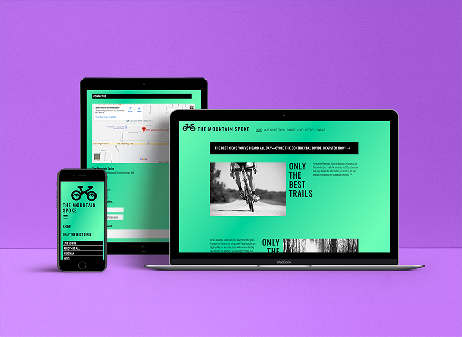
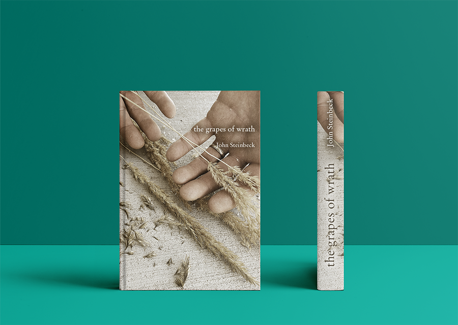

here's some of my stuff.
Web Design and Development
The Mountain Spoke Design and Development
The Mountain Spoke Website was created for a fictional company in Bozeman, Montana. This project consisted of first creating the company identity and target audience. After, the overall design concept and plan was created. A brief version of this design plan can be seen at this link. I then marked up the website and created a responsive design. The design consists of several pages including a shop page, a contact page and an event registration form. The finished website can be found at this link.
Logo Design and Branding
Cactus Needles: A Tailor Company Logo Design

Posters and Advertisements
Leave the Door Open—An Anti-Pornography Campaign


These three posters are a part of an anti-pornography public service announcement campaign called "Leave the Door Open". For each poster I took photos of real people as my template for my designs. E ach person really was holding a device in front of them or in their hands. I wanted each setting to feel genuine. The people in the background represent those we love and may be hurting while viewing pornography.
Leave the Door Open—An Anti-Pornography Campaign
These three posters are a part of an anti-pornography public service announcement campaign called "Leave the Door Open". For each poster I took photos of real people as my template for my designs. E ach person really was holding a device in front of them or in their hands. I wanted each setting to feel genuine. The people in the background represent those we love and may be hurting while viewing pornography.
Leave the Door Open—An Anti-Pornography Campaign


These three posters are a part of an anti-pornography public service announcement campaign called "Leave the Door Open". For each poster I took photos of real people as my template for my designs. Each person really was holding a device in front of them or in their hands. I wanted each setting to feel genuine. The people in the background represent those we love and may be hurting while viewing pornography.
Booklets and Book Covers
The Grapes of Wrath Book Cover Design
For an academic project I was asked to recreate a book cover for a classic novel. This book cover was created by photographs I took and then manipulated slightly. Themes for the Grapes of Wrath include hard work, family, trial and poverty. These themes were illustrated in the simplicity of the designa as well as the sullen saturation and subject of the photograph.